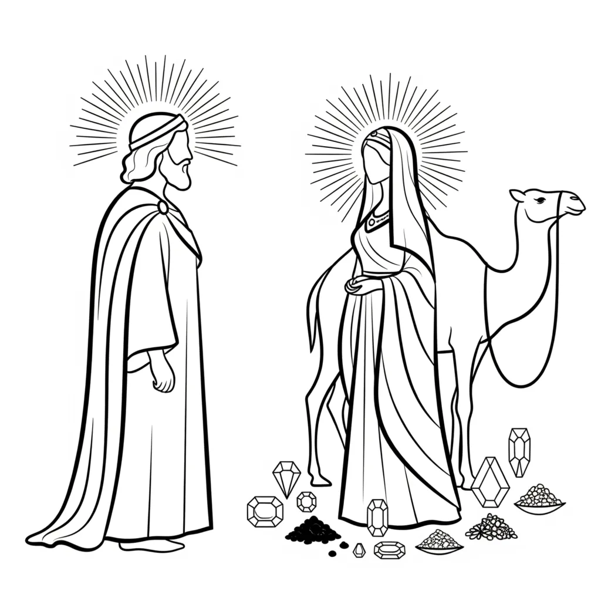

The story of the Queen of Sheba visiting Solomon traces the full movement of the ask, believe, receive principle through the mechanics of the linguistic key. Every figure, every gift, every gesture encodes a step in the process by which YHVH/LORD assumes an identity, Ehyeh/I AM, and Elohim enforces the outcome.
Desire Approaches Fulfilment
Now the queen of Sheba, hearing great things of Solomon, came to Jerusalem to put his wisdom to the test with hard questions; and with her came a very great train, and camels weighted down with spices, and great stores of gold and jewels: and when she came to Solomon she had talk with him of everything in her mind. — 2 Chronicles 9:1
Every figure in Scripture represents a quality of consciousness or an inner movement. The Queen of Sheba encodes desire itself, the awakening within YHVH/LORD that reaches toward something not yet possessed. As the key establishes, the feminine principle in Scripture personifies the receptive dimension of awareness, the power that receives and gives form to whatever identity man occupies as Ehyeh/I AM.
She arrives carrying hard questions. Hard questions are the resistance and contradiction that always accompany an earnest desire. They are the testing impulse within consciousness asking whether the assumed end can hold. The very great train she brings carries the many aspects of thought, experience, and accumulated belief that travel with any desire. Nothing in the inner life moves alone. The camels weighted down with spices, gold, and jewels are the resources the desire already holds, since per Thread 1 of the key, the seed already contains the fruit. The desire carries within it the substance of its own fulfilment.
Solomon's name encodes wholeness and completion, from the root shalom, peace. He encodes the state of the wish fulfilled, entire, lacking nothing. The name itself, as an identity code, declares the nature of what is being approached before the narrative unfolds. This is Thread 8 in operation: the name discloses the quality of the state, and Elohim enforces the outcome consistent with that meaning.
When she has talk with Solomon of everything in her mind, this is the inner dialogue between YHVH/LORD and the assumed end. Desire brings its full weight before the state it longs to occupy, its wishes, its doubts, its expectations. The Ask is being made in full.
Nothing Hidden: The Assumed State Answers All
And Solomon gave her answers to all her questions; there was no secret which he did not make clear to her. — 2 Chronicles 9:2
The assumed end has nothing to conceal. Once YHVH/LORD fully occupies the Ehyeh/I AM of the desired state, every question that arose from the position of lack dissolves within the nature of that state. The wholeness encoded in Solomon's name means the completed identity holds all answers the partial one was seeking. This is the Believe stage: the I AM is occupied as already true, and the judicial structure of Elohim has nothing left to contest.
The Striving Ceases
And when the queen of Sheba had seen the wisdom of Solomon, and the house which he had made, and the food at his table, and all his servants seated there, and those who were waiting on him in their places, and their robes, and his wine-servants and their robes, and the burned offerings which he made in the house of the Lord, there was no more spirit in her. — 2 Chronicles 9:3-4
Then there was no more spirit in her. The testing impulse that brought her questions dissolves. Desire, when it genuinely enters the presence of its own fulfilment, stops reaching. The tension that drove the whole journey has been answered from within the state itself. This is not defeat but resolution. Thread 3 of the key describes cleaving as the moment YHVH/LORD leaves the familiar, questioning state and enters the assumed identity fully. The striving belongs to the old state. The new state has no use for it.
Experience Confirms What Hearing Could Not
And she said to the king, The account which was given to me in my country of your acts and your wisdom was true. But I had no belief in their words till I came and saw with my eyes; and truly I had not heard half of your great wisdom; the account was short of the truth. — 2 Chronicles 9:5-6
The queen had heard the report. Hearing could not produce conviction. Only the experience of entering the state produced knowing. This mirrors the movement the key describes from intellectual grasp to embodied assumption. The Believe step cannot remain at the level of agreeing that something might be true. It requires YHVH/LORD to occupy Ehyeh/I AM as settled fact, and the queen's words mark exactly the moment that shift is complete.
Desire Pours Itself Into the Assumed State
And she gave the king a hundred and twenty talents of gold, and a great store of spices and jewels: never had such spices been seen as the queen of Sheba gave to Solomon. — 2 Chronicles 9:9
When desire finds its home in the assumed identity, it does not hold back. The gold represents the concentrated intensity of the longing. The spices carry the persistence of the journey. The jewels encode the insight gathered along the way. All of it moves toward Solomon, toward wholeness. This is the full cleaving movement of Thread 3: YHVH/LORD leaves the old state and brings everything carried across the journey into union with the assumed I AM. Nothing is withheld. This is what Receive looks like from inside the engine: the Petitioner and the Identity become one.
The Names That Connect: Sheba, Bath-Sheba, Elizabeth
The linguistic key treats names as identity codes. Thread 8 states that a biblical name reveals the intrinsic nature of the state being occupied, and Elohim enforces the outcome consistent with the meaning of the name. So it matters that the word sheba carries a double root in Hebrew. Strong's H7651 gives sheba both as seven, the number of completeness and covenant, and as the root of the verb to swear an oath. These two senses are not separate: to swear in Hebrew was literally to seven oneself, to bind by the sacred fullness of seven.
Bath-Sheba, Strong's H1339, means daughter of an oath, built directly from bath (daughter) and this same sheba root. She is the mother of Solomon, the one whose name means wholeness. The oath produces the complete state. The covenant precedes the fulfilment.
Elizabeth carries the Hebrew Elisheba, Strong's H472, which the lexicon defines as God of the oath or my God is an oath, from El (Elohim, H410) and the same sheba root. The name breaks precisely along the lines of the key: El is the plural governing structure, Elohim, and sheba is the sworn covenant that structure upholds. Elizabeth in her very name encodes Elohim bound by oath, the judicial enforcement mechanism of the key made personal.
The Queen of Sheba's name (H7614) is of foreign origin and does not carry the oath meaning directly. The connection runs through the shared sound and the constellation of names built on the sheba root around her: Bath-Sheba who bears Solomon, Beer-Sheba (well of the oath) where covenants are sealed, and Elizabeth in Luke who fulfils the same judicial function the key assigns to Elohim.
Elizabeth and Mary: The Same Arc in Luke
Then Mary got up and went quickly into the high lands, to a town of Judah; and went into the house of Zacharias and took Elisabeth in her arms. And when the voice of Mary came to the ears of Elisabeth, the baby made a sudden move inside her; then Elisabeth was full of the Holy Spirit, and she said with a loud voice: May blessing be on you among women, and a blessing on the child of your body. How is it that the mother of my Lord comes to me? For, truly, when the sound of your voice came to my ears, the baby in my body made a sudden move for joy. Happy will she be who had faith that the things which the Lord has said to her will be done. — Luke 1:39-45
Mary moves quickly toward the place of enforcement. Elizabeth, whose name encodes Elohim of the oath, recognises the assumed I AM before any word is spoken. The recognition is immediate and judicial. The child within Elizabeth, the latent outcome waiting to be born, leaps at the approach of the assumed identity. The blessing Elizabeth speaks is the mechanism of the key stated plainly: happy is she who had faith that what has been declared will be done. The sworn structure does not interrogate the assumption. It upholds it. Elohim enforces the I AM that YHVH/LORD has occupied.
Mary carries the Hebrew Miriam. The name has been read as beloved, as myrrh the anointing substance, and as the one who carries. In the key's terms she encodes the assumed identity in motion, YHVH/LORD who has received the declaration and moves with it toward the place of enforcement. She is the Ehyeh/I AM travelling to meet Elohim of the oath. The child leaps because the structure recognises the state. This is the Receive step made visible: the judicial framework responds the moment the fully assumed identity arrives.
The Queen of Sheba and Mary move through the same inner country. Both carry a desired state toward the place of its fulfilment. Both are met with recognition. Both find the structure already arranged around the identity they approach. The pattern holds across Abraham, Jacob, Joseph, and Judah as well, since each name encodes a state and Elohim enforces the outcome after its kind. The mechanics do not change. YHVH/LORD assumes Ehyeh/I AM, and Elohim, the Judges and Rulers of that I AM, enforce the outcome according to the laws of creation.
About The Author | Animals Series | Bible Verse Analysis | Genesis 2:23 Series | Solomon Series | Women in the Bible Series